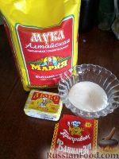
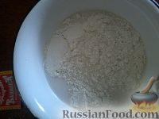
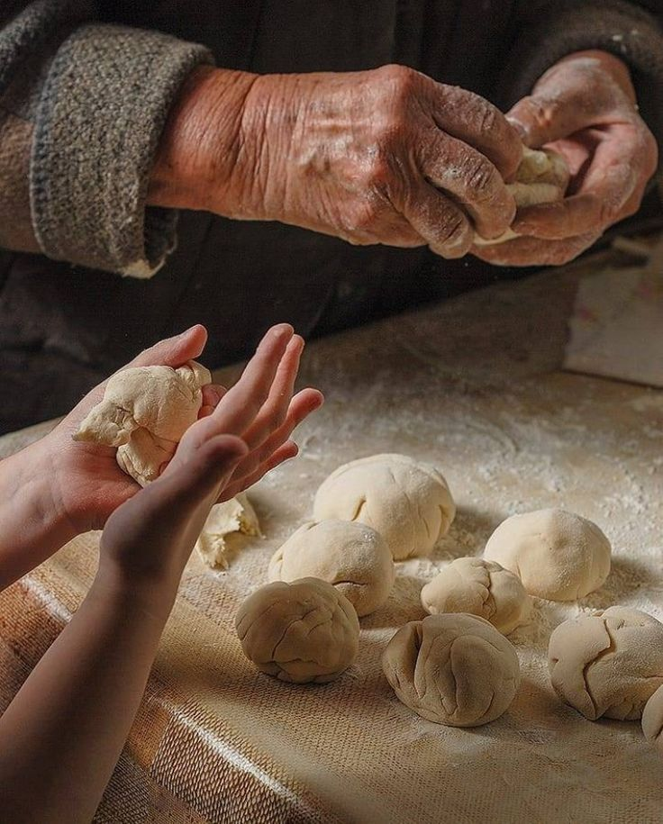

Перейти вниз к разделу "Виды булочек"
Самые быстрые и сладкие булочки! Те самые булочки из детства - это воспоминания о тепле и счастье, которые связаны с ароматом свежей сдобы.
| Наименование | Количество |
| Мука | 3 ст.л. + ещё 4 стакана |
| Сахар | 2 ст.л. |
| Дрожжи прессованные | 50 грамм |
| Вода | 1,5 стакана |
| Растительное масло | 0,5 стакана |
| Ванилин | по вкусу |
| Соль | 0,5 ч.л. |
Все, что понадобится, чтобы приготовить булочки из детства "Вкусняшки"!

Точно следуйте по рецепту и вы получите вкусные булочки!

Добавляем муку, сколько возьмет тесто.
Итоговый вид на булочки из детства:

Для многих булочки ассоциируются с детством, семейными посиделками за чаем, воспоминаниями о родном доме, мамах и бабушках.
Какие же они, булочки из детства?
Надеемся, наш рецепт помог вам окунуться в детство!